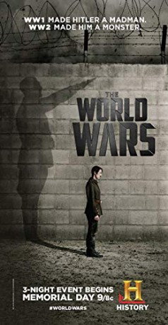

 
 IMDB-Wertung: 8.1 / 10
IMDB-Wertung: 8.1 / 10  Metascore: 0
Metascore: 0 
Das Doku-Drama durchleuchtet die Zeitspanne vom Beginn des Ersten Weltkriegs 1914 bis hin zum Ende des Zweiten Weltkriegs 1945. Im Fokus steht dabei die Entwicklung der Schlüsselpersonen des Zweiten Weltkriegs: Welchen Einfluss hatte der Erste Weltkrieg u. a. auf Adolf Hitler, Josef Stalin, Winston Churchill und Franklin D. Roosevelt?
Jahr: 2014
Dauer: 47 Minuten
FSK:
Land: USA Studio: History ChannelTonspuren:
Untertitel:
Auflösung: 720p (1280x720) Größe: 1136 MB
Genre: Krieg, Dokumentation, Geschichte, TV-Serie
Regisseur: John Ealer
Drehbuch: Chelsea Coates, Randy Counsman, Zachary Herrmann, Claire Lawton, Alec Michod
Soundtrack:
Darsteller:
- Daniel Martin Berkey als The Elder General Douglas MacArthur, 3 episodes, 2014
- David Mitchum Brown als Harry S. Truman, 3 episodes, 2014
- C. Conrad Cady als Vladimir Ilyich Lenin, 3 episodes, 2014
- Robyn A. Cole als Hitler's Butler, 3 episodes, 2014
- Dean Gosdin als Franklin Delano Roosevelt, 3 episodes, 2014
- Don Hartman als General George Patton, 3 episodes, 2014
- Jonathan Hartman als Benito Mussolini, 3 episodes, 2014
- Maximilian Klas als Young Hitler, 3 episodes, 2014
- Jody Matzer als Hitler General #1, 3 episodes, 2014
- Don Meehan als Charles DeGaulle, 3 episodes, 2014
- Jacopo Rampini als Young Stalin, 3 episodes, 2014
 Jeremy Renner als Narrator, 3 episodes, 2014
Jeremy Renner als Narrator, 3 episodes, 2014- Nabil Vinas als Young Mussolini, 3 episodes, 2014
 Gary Ayash als WWI Treaty of Versailles French Delegate, 2 episodes, 2014
Gary Ayash als WWI Treaty of Versailles French Delegate, 2 episodes, 2014- Matt Dearman als Young Patton, 2 episodes, 2014
 Donald Imm als Luftwaffe General, 2 episodes, 2014
Donald Imm als Luftwaffe General, 2 episodes, 2014- Greg Lang als Pres. Roosevelt's Aide, 2 episodes, 2014
 Steven Mackintosh als Narrated by, 2 episodes, 2014
Steven Mackintosh als Narrated by, 2 episodes, 2014- Hugh Scully als Adolf Hitler, 2 episodes, 2014
- Kurt Vogelsang als German General, 2 episodes, 2014
 Sewell Whitney als General George Marshall, 2 episodes, 2014
Sewell Whitney als General George Marshall, 2 episodes, 2014- Joseph K. Bevilacqua als Field Marshal Bernard Montgomery, 1 episode, 2014
- James Jimmy Bacon als President Wilson's Aide, 1 episode, 2014
- Matt Boliek als Stalin's Portrait Artist, 1 episode, 2014
 Peter Chiamardas als WWII Russian General, 1 episode, 2014
Peter Chiamardas als WWII Russian General, 1 episode, 2014- Ben Church als British POW, 1 episode, 2014
- Chris Condetti als German party member, 1 episode, 2014
- Bart Debicki als Hitler's Adjutant, 1 episode, 2014
- Vince Eisenson als White House Photographer, 1 episode, 2014
- Brian Foreman als FDR's Physician, 1 episode, 2014
- Jeffrey Klemmer als U.S. Army Officer, 1 episode, 2014
- Johnna Leary als German Cafe Patron, 1 episode, 2014
- Mike Marunde als Karl Mayr, 1 episode, 2014
- Cameron Ring als Henry Tandey, 1 episode, 2014
- Amanda Shafer als Eva Braun, 1 episode, 2014
- Mike Stevens als U.S. Army Officer, 1 episode, 2014
- Scott Mielock als German Officer (2014), unknown episodes
- John Major als Himself, unknown episodes
- John McCain als Himself, unknown episodes
- Leon Panetta als Himself, unknown episodes
- Colin Powell als Himself, unknown episodes
 Mark Falvo als American Solider (uncredited), 3 episodes, 2014
Mark Falvo als American Solider (uncredited), 3 episodes, 2014- Todd Mazzie als Churchill's Aide (uncredited), 3 episodes, 2014
 Michael Garvey als SS Officer (uncredited), 1 episode, 2014
Michael Garvey als SS Officer (uncredited), 1 episode, 2014- Mike Adler als Hitlers cook, 3 episodes, 2014
- Michael Almy als Dough Boy, 3 episodes, 2014
- James William Barker als Prime Minister Chamberlain's Aid, 3 episodes, 2014
- Ian Beyts als Winston Churchill, 3 episodes, 2014
- Wim De Groof als Field marshal German army (2014), 3 episodes, 2014
- Michael Perrie Jr. als Young DeGaulle, 3 episodes, 2014
Datei: X:\Dokumentationen\Geschichte+Politik\World Wars\e01 Der Große Krieg.mkv seit 24.09.2019
Festplatte: HD Serien(SU-Z)+Dokus+Musik
 Es gibt insgesamt 15 Filme in der Gruppe 'Dokumentationen\Geschichte+Politik'
Es gibt insgesamt 15 Filme in der Gruppe 'Dokumentationen\Geschichte+Politik'
")